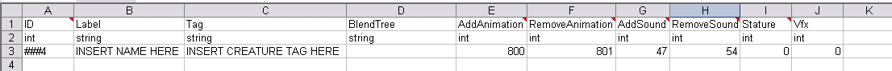
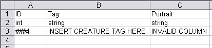

User:Satans karma
When I tried to create a follower based on the other Follower_tutorial, I had a bit of trouble following along. Most of it was understandable, but the scripts were kind of scattered, duplicated, confusing, and generally not designed for extensions to the single player campaign. So I made a more noob-friendly follower tutorial that extends the single player campaign. Since the other follower tutorial goes into more detail than I do about steps 1, 3, 4, and 11, you may want to look there when you're at those steps.
This is a work-in-progress. The formatting clearly needs some work. If you find something amiss, PM me on Bioware (screen name = satans_karma) or edit it here.
Contents
Assumptions
1) You know how to create a new module. If not, read through the module tutorial first. Making_a_new,_playable_module#Creating_a_Module
2) You know how to create a basic dialogue. If not, read through the conversation tutorial first. Conversation_tutorial
3) You know how to make a creature. If not, read through the creature tutorial first. Creature_tutorial
4) You know how to add waypoints to an area. If not, read through the area tutorial first. Area_tutorial#Setting_the_start_point
5) You know how to create a plot. If not, read through the plot tutorial first. Plot#Journal_entries
6) You know how to create a blank script and can copy-and-paste.
7) You know how to turn an Excel document (.xls extension) into a 2DA file (.gda extension). If not, read through the tutorial on how to compile 2DAs first. Compiling_2DAs
Directions
1) Create a new module. Make sure that "Extended Module" option in the "Properties" section is set to "Single Player." [Eventually you'll have to come back to this to set the "script" to the module_script you'll write below.] Always make sure you are working within your module. It'll say your module name at the top of the toolset.
2) Create a dialogue that has conversation branches that:
- a. allows you to hire the follower (e.g. "Can I join your party?" --> "Yes" or "No") (Set this line to show up only once per game)
- b. allows you to fire the follower (e.g. "I want you to leave")
- c. allows you to back out of the conversation (e.g. "Nevermind. I didn't mean to bother you.")
- d. any other optional dialogue lines
3) Create your follower. Change its class, inventory, name, description, etc. to whatever you want. Be sure to list the dialogue you created in the "Conversation" option. Make sure you give the creature/follower a UNIQUE tag (usually only an issue if you are duplicating an existing NPC). Save and check in.
4) Find the area called "char_stage." Duplicate it. When you name it, add a prefix to char_stage (so it'll be called something like "xxx_char_stage"). The Folder, Module, and Owner Module should all be your module. Add a waypoint to the area. The tag of the waypoint should be your creature's unique tag with a "char_" prefix (so it'll be called something like "char_YourUniqueCreatureTag"). [If you plan to release this mod to the public, you should also include waypoints for the other mod companions. A list can be found on the Follower_guidelines page.] Save and check in the area. [The other Follower_tutorial has some nice images that might help you with this. You should check them out.] Alternatively, you can download my partypicker from http://social.bioware.com/project/3408/ and add your waypoint (and any others that I may be missing) to it.
5) Create a new plot. Call it something like gen00pt_party_xxx. Insert (at minimum) five new main flags - FOLLOWERNAME_CREATED, FOLLOWERNAME_HIRED, FOLLOWERNAME_IN_PARTY, FOLLOWERNAME_IN_CAMP, and FOLLOWERNAME_FIRED. Replace "FOLLOWERNAME" with your follower's name. In the column that says "repeatable" check "yes" for "FOLLOWERNAME_IN_PARTY" and "FOLLOWERNAME_IN_CAMP." Save and check in.
6) Create a new script. Name it something like xxx_module_core. Copy and paste the Module Core Script below into this script. Be sure to change all "xxx," "FOLLOWERNAME," and "INSERT FOLLOWER TAG HERE" bits to the appropriate prefixes, names, and tags. Save and check in.
7) Create a new script. Name it something like xxx_hire_creaturename. Copy and paste the Hiring Script below into this script. Be sure to change all "xxx," "FOLLOWERNAME," and "INSERT FOLLOWER TAG HERE" bits to the appropriate prefixes, names, and tags. Save and check in.
8) Create a new script. Name it something like xxx_fire_creaturename. Copy and paste the Firing Script below into this script. Be sure to change all "xxx," "FOLLOWERNAME," and "INSERT FOLLOWER TAG HERE" bits to the appropriate prefixes, names, and tags. Save and check in.
9) Create a new script. Name it something like xxx_spawn_camp. Copy and paste the Spawn Follower in Camp Script into this script. Be sure to change all "xxx," "FOLLOWERNAME," and "INSERT FOLLOWER TAG HERE" bits to the appropriate prefixes, names, and tags. Save and check in.
10) At this point, you need to decide where you want to spawn your new follower. If your follower is an NPC that already exists in the game, things can get rather complicated. You'll probably have to duplicate an existing dialogue, add your hiring lines to it (which means you won't need the hiring line in the dialogue from Step #2), override it, and repackage the voice over. (This is beyond the scope of this tutorial.) If you want to place your follower in an existing area, that can be done fairly easily with PRCSCR scripts.
- a. You will have to find the tag of the area and the exact location in which you want to spawn your follower. This Website describes how to do that using a short script.
- b. After finding the area tag and location of your desired spawning spot, create a new script. Name it something like xxx_spawn_follower. Copy and paste the spawn follower in area script into this script. Be sure to change all "xxx," "FOLLOWERNAME," and "INSERT FOLLOWER TAG HERE" bits to the appropriate prefixes, names, and tags.
- c. Save and check in.
NOTE: You cannot (as far as I know) use PRCSCR to spawn creatures in areas that are included in an area list but are not the first area entered on that list. For example, you can spawn a creature in the marketplace in Denerim (because it's usually the first area of Denerim to be entered), but you cannot spawn a creature in the Wonders of Thedas shop (because you had to go through the marketplace to get there). If I can get this to work in the future, I will update the script, but until then, you'll have to find other spawning locations. To check to see if your location is on an area list, find the area in the toolset and look at its Area List property in the object inspector.
11) Open a new excel document. It doesn't matter what it's called. Rename the Sheet1, Sheet2, and Sheet3 tabs at the bottom to partypicker_xxx, party_picker_xxx, and PRCSCR_xxx.
In partypicker_xxx, create columns like those below. Replace ### with a very large number, and add in your creature's tag and name.

{kind=link}
In party_picker_xxx, create columns like those below. Replace ### with the same very large number you used above, and add in your creature's tag.

{kind=link}
In PRCSCR_xxx, create columns like those below. Replace ### with a very large number, and change the script to whatever you called the spawn follower in camp script (probably something like xxx_spawn_camp).
{kind=link}
AMENDMENT: In addition to the rows above, add another row that contains | ###5 | INSERT THE AREA TAG YOU FOUND | xxx_spawn_follower |
Convert the excel document into a 2DA. Make sure the resulting GDA file is in your .../module/override folder.
12) Go back to your dialogue. In the hiring branch, set the "action" to fire the hiring script. In the firing branch, set the "action" to fire the firing script. [The plot gen00pt_generic_actions has a flag GEN_OWNER_DISAPPEAR. This can be used to make the follower disappear/get fired, though it won't set the plot flag that the follower was fired, so be careful.] Save and check in (unless you want to do the optional step below). For more complex dialogues, you'll have to set up conditions based on plots. (For example, setting the firing branch to only show up if the follower has actually been hired.)
13) OPTIONAL: If you want to increase/decrease approval with your dialogue, you can create a new script using the Simple Approval Script below. You may have to make several copies for varying levels of approval/disapproval. (There is a shorter way of doing this using plots, but it's not very noob-friendly.) After you have saved and checked in the approval scripts, you can set your conversation to fire these scripts. Save and check in.
14) Export your module.
- Go to Tools->Export->Export without dependent resources
- Go to Tools->Export->Generate module XML
- Go to Tools->Export->Generate manifest XML
15) Don't forget to clean out the toolsetexport folders before in-game testing.
- Go to C:\Documents and Settings\YourName\My Documents\BioWare\Dragon Age\AddIns\YourModule\core\override\toolsetexport. Move everything in there (if anything) up one level to C:\Documents and Settings\YourName\My Documents\BioWare\Dragon Age\AddIns\YourModule\core\override.
- Go to C:\Documents and Settings\YourName\My Documents\BioWare\Dragon Age\AddIns\YourModule\module\override\toolsetexport. Move everything in there (if anything) up one level to C:\Documents and Settings\YourName\My Documents\BioWare\Dragon Age\AddIns\YourModule\module\override.
- In the toolset, go to Tools->Export->Empty export directories
Scripts
In theory, these scripts should first spawn the follower in camp. At that point, you should be able to talk to him/her to hire them. It'll show the partypicker GUI (probably unnecessarily since you're in camp). After that, whenever you enter camp, the follower should move to the location where they were spawned. However, I do advise caution. I hired my follower from a location other than camp, so these scripts have not been tested as I included them here. You may need to tweak them a bit to fit them to your needs. If you don't want the partypicker GUI to show up at camp when you hire the follower, just omit "SetPartyPickerGUIStatus(2);" and "ShowPartyPickerGUI();" from the hiring script.
Module Core Script
#include "wrappers_h"
#include "approval_h"
#include "plt_gen00pt_party_xxx"
void main()
{
event ev = GetCurrentEvent();
int nEventType = GetEventType(ev);
object oEventCreator = GetEventCreator(ev);
object oHero = GetHero();
object oParty = GetParty(oHero);
int nEventHandled = FALSE;
switch(nEventType)
{
case EVENT_TYPE_MODULE_GETCHARSTAGE:
{
//ONLY DO THIS IF YOU HAVE A STAGE WITH EVERYONE'S CHARACTERS IN IT
SetPartyPickerStage("xxx_char_stage", "partypicker");
break;
}
case EVENT_TYPE_PARTYMEMBER_ADDED:
{
object oFollower = GetEventObject(ev, 0);
if (GetTag(oFollower) == "INSERT FOLLOWER TAG HERE")
{
SetLocalInt(oFollower, CREATURE_REWARD_FLAGS, 0);
WR_SetFollowerState(oFollower, FOLLOWER_STATE_ACTIVE, FALSE);
AddCommand(oFollower, CommandJumpToLocation(GetLocation(GetHero())));
WR_SetPlotFlag(PLT_GEN00PT_PARTY_XXX, FOLLOWERNAME_IN_PARTY, TRUE, FALSE);
WR_SetPlotFlag(PLT_GEN00PT_PARTY_XXX, FOLLOWERNAME_IN_CAMP, FALSE, FALSE);
}
break;
}
case EVENT_TYPE_PARTYMEMBER_DROPPED:
{
object oFollower = GetEventObject(ev, 0);
if (GetTag(oFollower) == "INSERT FOLLOWER TAG HERE")
{
WR_SetFollowerState(oFollower, FOLLOWER_STATE_AVAILABLE, FALSE);
WR_SetPlotFlag(PLT_GEN00PT_PARTY_XXX, FOLLOWERNAME_IN_CAMP, TRUE, FALSE);
WR_SetPlotFlag(PLT_GEN00PT_PARTY_XXX, FOLLOWERNAME_IN_PARTY, FALSE, FALSE);
}
WR_SetObjectActive(oFollower, FALSE);
break;
}
//The section below is supposed to handle gifts; omit it if it causes a problem
case EVENT_TYPE_MODULE_HANDLE_GIFT:
{
object oFollower = GetEventObject(ev, 0);
object oControlled = GetMainControlled();
int nFollower = INSERT VERY LARGE NUMBER HERE; //<-- same as one from approval GDA
if (GetTag(oFollower) == "INSERT FOLLOWER TAG HERE")
{
Approval_ChangeApproval(nFollower, 5);
AdjustFollowerApproval(oControlled, -5, TRUE);
}
break;
}
//The section below returns followers to their positions in camp when world map is closed
case EVENT_TYPE_WORLD_MAP_CLOSED:
{
object oPC = GetHero();
object oFollower = GetObjectByTag("INSERT FOLLOWER TAG HERE");
object oArea = GetArea(oPC);
string sAreaTag = GetTag(oArea);
int nCloseType = GetEventInteger(ev, 0); // 0 for cancel, 1 for travel
if(nCloseType == 0)
{
if (GetLocalInt(oArea, AREA_PARTY_CAMP) == 1)
{
if(GetFollowerState(oFollower) == FOLLOWER_STATE_ACTIVE)
{
//Creature's camp position - should be same as used in spawn in camp script
vector vTent = Vector(138.564f, 111.815f, -1.08586f);
location lTent = Location(GetArea(GetHero()), vTent, 180.0f);
command cMoveFollower = CommandJumpToLocation(lTent);
SetFollowerState(oFollower, FOLLOWER_STATE_AVAILABLE);
AddCommand(oFollower, cMoveFollower);
WR_SetObjectActive(oFollower, TRUE);
WR_SetPlotFlag(PLT_GEN00PT_PARTY_XXX, FOLLOWERNAME_IN_PARTY, FALSE, FALSE);
WR_SetPlotFlag(PLT_GEN00PT_PARTY_XXX, FOLLOWERNAME_IN_CAMP, TRUE, FALSE);
}
}
}
break;
}
}
}
Hiring Script (short version - no level up table, no AI)
#include "utility_h"
#include "wrappers_h"
#include "plot_h"
#include "party_h"
#include "events_h"
#include "core_h"
#include "global_objects_h"
#include "sys_autolevelup_h"
#include "sys_chargen_h"
#include "sys_rewards_h"
#include "approval_h"
#include "plt_gen00pt_party_xxx"
void main()
{
object oHero = GetHero();
object oFollower = GetObjectByTag("INSERT FOLLOWER TAG HERE");
int nLevel = GetLevel(oHero);
ScaleEquippedItems(oFollower, nLevel);
UT_HireFollower(oFollower, FALSE);
WR_SetPlotFlag(PLT_GEN00PT_PARTY_XXX, FOLLOWERNAME_HIRED, TRUE, FALSE);
SetLocalInt(oFollower, CREATURE_REWARD_FLAGS, 0);
SetGroupId(oFollower, GetGroupId(oHero));
SetFollowerApprovalEnabled(oFollower, TRUE);
SetFollowerApprovalDescription(oFollower, 371487);
SetPartyPickerGUIStatus(2);
ShowPartyPickerGUI();
}
Hiring Script (long version - level up table, AI table)
#include "wrappers_h"
#include "ability_h"
#include "sys_autolevelup_h"
#include "sys_chargen_h"
#include "approval_h"
#include "2da_constants_h"
#include "global_constants_h"
#include "plt_gen00pt_party_xxx"
void main()
{
object oHero = GetHero();
object oPC = GetPartyLeader();
object oFollower = GetObjectByTag("INSERT FOLLOWER TAG HERE");
//object oFollower = CreateObject(OBJECT_TYPE_CREATURE, R"INSERT TAG OF CLONED FOLLOWER HERE.utc", GetLocation(GetHero())); <--use if hiring existing NPC
int nALTable = TABLE_ALFOLLOWERNAME;
int nLevel = GetLevel(oHero);
//SetObjectActive(GetObjectByTag("INSERT TAG OF ORIGINAL NPC HERE"), FALSE); <--use if hiring existing NPC
SetEventScript(oFollower, RESOURCE_SCRIPT_PLAYER_CORE);
SetLocalInt(oFollower, CREATURE_REWARD_FLAGS, 0);
Chargen_InitializeCharacter(oFollower, FALSE);
Chargen_SelectRace(oFollower, GetCreatureRacialType(oFollower));
Chargen_SelectCoreClass(oFollower, nClass);
AL_DoAutoLevelUp(oFollower, TRUE);
Chargen_EnableTacticsPresets(oFollower);
SetAutoLevelUp(oFollower, 2); //done by UT_HireFollower
ScaleEquippedItems(oFollower, nLevel);
SetFollowerApprovalEnabled(oFollower, TRUE);
SetFollowerApprovalDescription(oFollower, 371487);
//Approval_AddFollowerBonusAbility(nAppIndex, 0); <--write custom script similar to this one to have approval bonus abilities
SetGroupId(oFollower, GetGroupId(oHero)); //done by UT_HireFollower
if (GetArraySize(GetPartyList(oPC)) < 4)
{
//adds follower to party if there is room
AddCommand(oFollower, CommandJumpToLocation(GetLocation(GetHero())));
WR_SetFollowerState(oFollower, FOLLOWER_STATE_ACTIVE);
}
else
{
// clears active party if the party is full
if(WR_GetPlotFlag( PLT_GEN00PT_PARTY, GEN_ALISTAIR_RECRUITED))
WR_SetPlotFlag(PLT_GEN00PT_PARTY, GEN_ALISTAIR_IN_CAMP, TRUE, TRUE);
if(WR_GetPlotFlag( PLT_GEN00PT_PARTY, GEN_DOG_RECRUITED))
WR_SetPlotFlag(PLT_GEN00PT_PARTY, GEN_DOG_IN_CAMP, TRUE, TRUE);
if(WR_GetPlotFlag( PLT_GEN00PT_PARTY, GEN_SHALE_RECRUITED))
WR_SetPlotFlag(PLT_GEN00PT_PARTY, GEN_SHALE_IN_CAMP, TRUE, TRUE);
if(WR_GetPlotFlag( PLT_GEN00PT_PARTY, GEN_STEN_RECRUITED))
WR_SetPlotFlag(PLT_GEN00PT_PARTY, GEN_STEN_IN_CAMP, TRUE, TRUE);
if(WR_GetPlotFlag( PLT_GEN00PT_PARTY, GEN_ZEVRAN_RECRUITED))
WR_SetPlotFlag(PLT_GEN00PT_PARTY, GEN_ZEVRAN_IN_CAMP, TRUE, TRUE);
if(WR_GetPlotFlag( PLT_GEN00PT_PARTY, GEN_OGHREN_RECRUITED))
WR_SetPlotFlag(PLT_GEN00PT_PARTY, GEN_OGHREN_IN_CAMP, TRUE, TRUE);
if(WR_GetPlotFlag( PLT_GEN00PT_PARTY, GEN_LELIANA_RECRUITED))
WR_SetPlotFlag(PLT_GEN00PT_PARTY, GEN_LELIANA_IN_CAMP, TRUE, TRUE);
if(WR_GetPlotFlag( PLT_GEN00PT_PARTY, GEN_MORRIGAN_RECRUITED))
WR_SetPlotFlag(PLT_GEN00PT_PARTY, GEN_MORRIGAN_IN_CAMP, TRUE, TRUE);
if(WR_GetPlotFlag( PLT_GEN00PT_PARTY, GEN_WYNNE_RECRUITED))
WR_SetPlotFlag(PLT_GEN00PT_PARTY, GEN_WYNNE_IN_CAMP, TRUE, TRUE);
if(WR_GetPlotFlag( PLT_GEN00PT_PARTY, GEN_LOGHAIN_RECRUITED))
WR_SetPlotFlag(PLT_GEN00PT_PARTY, GEN_LOGHAIN_IN_CAMP, TRUE, TRUE);
if(WR_GetPlotFlag( PLT_GEN00PT_PARTY_XXX, FOLLOWERNAME_HIRED))
{
WR_SetFollowerState(GetObjectByTag(GEN_FL_FOLLOWERNAME), FOLLOWER_STATE_AVAILABLE);
WR_SetPlotFlag(PLT_GEN00PT_PARTY_XXX, FOLLOWERNAME_IN_PARTY, FALSE, FALSE);
WR_SetPlotFlag(PLT_GEN00PT_PARTY_XXX, FOLLOWERNAME_IN_CAMP, TRUE, FALSE);
}
WR_SetFollowerState(oFollower, FOLLOWER_STATE_ACTIVE);
SetPartyPickerGUIStatus(2);
ShowPartyPickerGUI();
}
}
The other follower tutorial shows how to set up level up table.
Where it says INSERTCLASSHERE, use CLASS_WARRIOR, CLASS_WIZARD, or CLASS_ROGUE
For specialization numbers, go to the dragon age wiki [1] (I know the same listing exists here somewhere, but I can't seem to find it right now.)
If you are using an existing NPC as your follower, you'll have to make three easy changes to the script above:
1) Remove the "//" from "//SetObjectActive(GetObjectByTag("INSERT TAG OF ORIGINAL NPC HERE"), FALSE);"
2) Add "//" in front of "object oFollower = GetObjectByTag("INSERT TAG OF CLONED FOLLOWER HERE");"
3) Remove the "//" from "//object oFollower = CreateObject(OBJECT_TYPE_CREATURE, R"INSERT TAG OF CLONED FOLLOWER HERE.utc", GetLocation(GetHero()));"
Firing Script
#include "utility_h"
#include "wrappers_h"
#include "events_h"
#include "plt_gen00pt_party_xxx"
void main()
{
object oFollower = GetObjectByTag("INSERT FOLLOWER TAG HERE");
UT_FireFollower(oFollower, TRUE, TRUE);
DestroyObject(oFollower);
WR_SetPlotFlag(PLT_GEN00PT_PARTY_XXX, FOLLOWERNAME_FIRED, TRUE);
}
Spawn Follower in Camp Script
#include "utility_h"
#include "wrappers_h"
#include "party_h"
#include "plt_gen00pt_party_xxx"
void main()
{
object oFollower = GetObjectByTag("INSERT TAG OF FOLLOWER HERE");
//Follower's camp position near... <--change the vector coordinates below to camp coordinates
vector vFollowerCamp = Vector(135.424f, 124.962f, -0.253687f);
location lFollowerCamp = Location(GetArea(GetHero()), vFollowerCamp, -130.2f);
command cMoveFollowerCamp = CommandJumpToLocation(lFollowerCamp);
//Follower's Redcliffe position near... <--change the vector coordinates below to Redcliffe coordinates
vector vFollowerRed = Vector(32.3337f, -26.7351f, 0.401679f);
location lFollowerRed = Location(GetArea(GetHero()), vFollowerRed, 30.0f);
command cMoveFollowerRed = CommandJumpToLocation(lFollowerRed);
//Follower's Denerim position near... <--change the vector coordinates below to Denerim estate coordinates
vector vFollowerDen = Vector(79.0577f, -9.56501f, 5.02284f);
location lFollowerDen = Location(GetArea(GetHero()), vFollowerDen, 180.0f);
command cMoveFollowerDen = CommandJumpToLocation(lFollowerDen);
SetFollowerState(oFollower, FOLLOWER_STATE_AVAILABLE);
WR_SetObjectActive(oFollower, TRUE);
SetImmortal(oFollower, TRUE);
RW_CatchUpToPlayer(oFollower);
if (GetTag(oArea) == "cam100ar_camp_plains" || GetTag(oArea) == "cam110ar_camp_arch3" || GetTag(oArea) == "cam104ar_camp_arch1")
{
AddCommand(oFollower, cMoveFollowerCamp);
WR_SetPlotFlag(PLT_GEN00PT_PARTY_XXX, FOLLOWER_IN_PARTY, FALSE, FALSE);
WR_SetPlotFlag(PLT_GEN00PT_PARTY_XXX, FOLLOWER_IN_CAMP, TRUE, FALSE);
}
else if (GetTag(oArea) == "cli300ar_redcliffe_castle")
{
AddCommand(oFollower, cMoveFollowerRed);
WR_SetPlotFlag(PLT_GEN00PT_PARTY_XXX, FOLLOWER_IN_PARTY, FALSE, FALSE);
WR_SetPlotFlag(PLT_GEN00PT_PARTY_XXX, FOLLOWER_IN_CAMP, FALSE, FALSE);
}
else if (GetTag(oArea) == "den211ar_arl_eamon_estate_1")
{
AddCommand(oFollower, cMoveFollowerDen);
WR_SetPlotFlag(PLT_GEN00PT_PARTY_XXX, FOLLOWER_IN_PARTY, FALSE, FALSE);
WR_SetPlotFlag(PLT_GEN00PT_PARTY_XXX, FOLLOWER_IN_CAMP, FALSE, FALSE);
}
}
Spawn Follower in Area Script
#include "utility_h"
#include "wrappers_h"
#include "plt_gen00pt_party_xxx"
void main()
{
object oArea = GetObjectByTag("INSERT AREA TAG HERE");
vector vLocation = Vector(361.868f, 214.521f, 1.93519f); //change these numbers to the ones you found
if (WR_GetPlotFlag(PLT_GEN00PT_PARTY_XXX, FOLLOWERNAME_CREATED) == FALSE)
{
CreateObject(OBJECT_TYPE_CREATURE, R"INSERT FOLLOWER TAG HERE.utc", Location(oArea, vLocation, 0.0f)); //change 0.0f to the orientation angle you found
WR_SetPlotFlag(PLT_GEN00PT_PARTY_XXX, FOLLOWERNAME_CREATED, TRUE);
}
}
Simple Approval Script
#include "approval_h"
void main()
{
object oFollower = GetObjectByTag("INSERT FOLLOWER TAG HERE");
AdjustFollowerApproval(oFollower, 5, TRUE);
}
NOTE: Change the 5 to whatever you want the approval to increase by. Change to a negative number if you want to decrease approval.
Other Notes
It is possible to combine the separate party-related scripts (like hiring, firing, etc.) into a single plot script. This can also be done for the various approval-related scripts (like increasing/decreasing approval, setting up romances, etc.). However, this requires more advanced scripting knowledge than the separate scripts. Eventually, I may add the scripts and directions here for more advanced users.